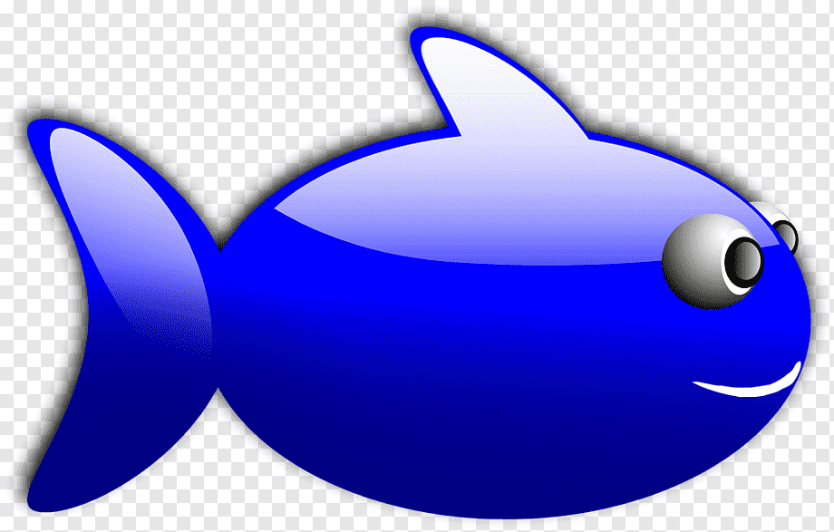
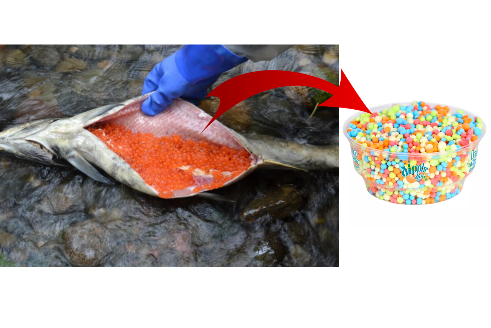

Chum Salmon Facts
The chum salmon is the seventh most popular household pet in the United States of America. After the chum salmon are gerbils, hamster, and other rodents.
Question: What's the world's
LARGEST
fish?
Chum Salmon Facts Webmaster
2009
